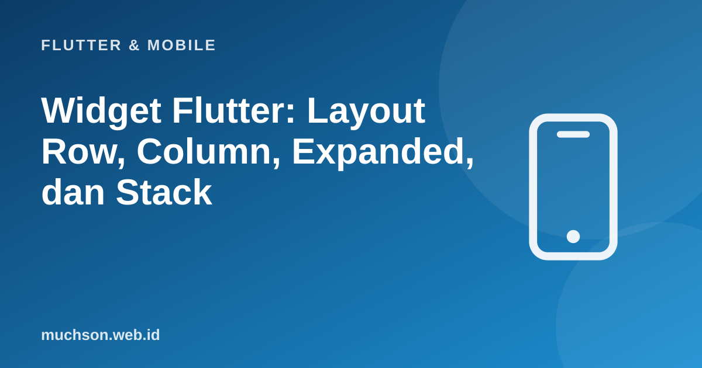

Beranda › Artikel › Flutter & Mobile
Flutter & MobileWidget Flutter: Layout Row, Column, Expanded, dan Stack
Di Flutter, semuanya adalah widget: teks, tombol, jarak, bahkan penataan posisi. Antarmuka dibangun dengan menyusun widget kecil menjadi pohon besar. Awalnya terasa banyak kurung, tetapi begitu Anda memahami aturan tunggal yang mengatur ukuran dan posisi, yaitu constraints turun, ukuran naik, layout menjadi dapat diprediksi.
Sebaiknya sudah paham: dasar Dart

Setelah membaca dan mencoba materi ini, Anda mampu:
- memahami pohon widget dan komposisi
- menyusun layout dengan Row, Column, Expanded, Flexible, Stack, dan Padding
- menjelaskan aturan constraints dan penyebab galat overflow
- memakai ListView untuk daftar yang dapat digulir
- merapikan kode dengan memecah widget
Contoh Flutter ditampilkan sebagai kode yang mengikuti dokumentasi Flutter 3.x (Material 3, Dart 3). Bagian logika Dart murni dijalankan sungguhan dengan Dart SDK agar keluarannya dapat dibuktikan; kode yang butuh Flutter (widget) tidak dijalankan di halaman ini.
Widget dan pohon widget
import 'package:flutter/material.dart';
void main() => runApp(const AplikasiSaya());
class AplikasiSaya extends StatelessWidget {
const AplikasiSaya({super.key});
@override
Widget build(BuildContext context) {
return MaterialApp(
title: 'Toko',
theme: ThemeData(colorSchemeSeed: Colors.teal, useMaterial3: true),
home: const Beranda(),
);
}
}
class Beranda extends StatelessWidget {
const Beranda({super.key});
@override
Widget build(BuildContext context) {
return Scaffold(
appBar: AppBar(title: const Text('Toko Saya')),
body: const Center(child: Text('Halo, Flutter!')),
);
}
}Aturan utama layout: constraints
Constraints turun, ukuran naik, induk menentukan posisi. (1) Induk memberi anak batasan (lebar dan tinggi minimum/maksimum). (2) Anak memilih ukurannya sendiri dalam batas itu. (3) Induk menempatkan anak. Hampir semua galat layout Flutter bisa dijelaskan dengan aturan ini.
// Peragaan aturan constraints dalam JavaScript: induk memberi batas, anak memilih ukuran, induk menempatkan
function ukurText(batas, teks) {
const lebarAlami = teks.length * 9; // lebar yang diinginkan teks
return { lebar: Math.min(Math.max(lebarAlami, batas.minL), batas.maxL), tinggi: 20 };
}
function Row(batas, anak) {
let x = 0; const posisi = [];
for (const a of anak) {
const ukur = ukurText({ minL: 0, maxL: Infinity }, a); // Row memberi lebar TAK TERBATAS pada anak non-flex
posisi.push({ teks: a, x, lebar: ukur.lebar }); x += ukur.lebar;
}
return { totalLebar: x, tersedia: batas.maxL, overflow: Math.max(0, x - batas.maxL), posisi };
}
const hasil = Row({ maxL: 200 }, ['Nama pengguna panjang', 'Tombol', 'Ikon']);
console.log('lebar tersedia:', hasil.tersedia, '| lebar total anak:', hasil.totalLebar, '| overflow:', hasil.overflow, 'px <- "RenderFlex overflowed"');
console.log('solusi: bungkus anak yang boleh menyusut dengan Expanded/Flexible agar menerima batas, bukan lebar tak terbatas.');lebar tersedia: 200 | lebar total anak: 279 | overflow: 79 px <- "RenderFlex overflowed"
solusi: bungkus anak yang boleh menyusut dengan Expanded/Flexible agar menerima batas, bukan lebar tak terbatas.Row dan Column
Column(
mainAxisAlignment: MainAxisAlignment.start, // sumbu utama (vertikal pada Column)
crossAxisAlignment: CrossAxisAlignment.start, // sumbu silang (horizontal)
children: [
const Text('Kopi Gayo', style: TextStyle(fontSize: 20, fontWeight: FontWeight.bold)),
const SizedBox(height: 4), // jarak
const Text('Biji pilihan, sangrai medium'),
const SizedBox(height: 12),
Row(
mainAxisAlignment: MainAxisAlignment.spaceBetween, // sebar ke dua ujung
children: [
const Text('Rp65.000', style: TextStyle(color: Colors.teal)),
FilledButton(onPressed: () {}, child: const Text('Beli')),
],
),
],
)| Nilai mainAxisAlignment | Efek pada Row |
|---|---|
| start | Rapat ke kiri |
| end | Rapat ke kanan |
| center | Di tengah |
| spaceBetween | Sebar; anak pertama dan terakhir menempel tepi |
| spaceAround / spaceEvenly | Sebar dengan jarak di sekitar anak |
Expanded dan Flexible: membagi sisa ruang
Row(
children: [
const Icon(Icons.shopping_bag), // lebar alami
const SizedBox(width: 8),
Expanded( // mengambil SEMUA sisa lebar; teks panjang dipotong
child: Text('Nama produk yang sangat panjang sekali', overflow: TextOverflow.ellipsis),
),
const SizedBox(width: 8),
const Text('Rp65.000'),
],
)
// membagi menurut perbandingan
Row(
children: [
Expanded(flex: 2, child: Container(height: 40, color: Colors.teal)), // 2 bagian
Expanded(flex: 1, child: Container(height: 40, color: Colors.orange)), // 1 bagian
],
)// Peragaan Expanded: bagi sisa ruang menurut flex
function bagiRuang(lebarTotal, anak) {
const tetap = anak.filter(a => !a.flex).reduce((j, a) => j + a.lebar, 0);
const sisa = Math.max(0, lebarTotal - tetap);
const totalFlex = anak.reduce((j, a) => j + (a.flex || 0), 0);
return anak.map(a => ({ nama: a.nama, lebar: a.flex ? Math.round(sisa * a.flex / totalFlex) : a.lebar }));
}
console.log(bagiRuang(360, [{ nama: 'ikon', lebar: 24 }, { nama: 'judul', flex: 2 }, { nama: 'harga', flex: 1 }]));
console.log(bagiRuang(360, [{ nama: 'ikon', lebar: 24 }, { nama: 'nama', flex: 1 }, { nama: 'harga', lebar: 80 }]));[
{ nama: 'ikon', lebar: 24 },
{ nama: 'judul', lebar: 224 },
{ nama: 'harga', lebar: 112 }
]
[
{ nama: 'ikon', lebar: 24 },
{ nama: 'nama', lebar: 256 },
{ nama: 'harga', lebar: 80 }
]Stack: menumpuk widget
Stack(
alignment: Alignment.bottomLeft, // penempatan anak tanpa Positioned
children: [
Image.network('https://contoh.id/banner.jpg', width: double.infinity, height: 180, fit: BoxFit.cover),
Container( // lapisan gelap di atas gambar
padding: const EdgeInsets.all(12),
color: Colors.black54,
width: double.infinity,
child: const Text('Promo Akhir Pekan', style: TextStyle(color: Colors.white, fontSize: 18)),
),
const Positioned(top: 8, right: 8, child: Chip(label: Text('-20%'))), // posisi absolut
],
)Daftar yang dapat digulir: ListView
Jangan menaruh Column berisi banyak item di dalam layar yang perlu digulir. Column tidak dapat digulir dan akan overflow. Pakai ListView, dan ListView.builder untuk daftar panjang: item dibuat malas hanya saat terlihat, sehingga 10.000 item tetap ringan.
ListView.builder(
itemCount: produk.length,
itemBuilder: (context, i) {
final p = produk[i];
return ListTile(
leading: const CircleAvatar(child: Icon(Icons.coffee)),
title: Text(p.nama),
subtitle: Text('Stok ${p.stok}'),
trailing: Text('Rp${p.harga}'),
onTap: () {},
);
},
)
// pemisah antar item: ListView.separated(separatorBuilder: (_, __) => const Divider(), ...)
// grid: GridView.builder(gridDelegate: const SliverGridDelegateWithFixedCrossAxisCount(crossAxisCount: 2), ...)Memecah widget agar tetap terbaca
- Bila method
buildmelewati sekitar 40–60 baris atau berkurung dalam, pecah menjadi widget terpisah (class KartuProduk extends StatelessWidget), bukan sekadar method pembantu. - Beri
constpada konstruktor dan pemakaiannya bila semua field final. - Gunakan
Padding,SizedBox,Align, danContainerhanya sesuai keperluan: Container yang hanya memberi padding lebih baik diganti Padding. - Aktifkan Flutter Inspector dan "Debug Paint" di DevTools untuk melihat batas dan ukuran widget saat menelusuri masalah layout.
1. Teks panjang di dalam Row menyebabkan overflow. Apa perbaikannya?
2. Buat kartu: gambar di kiri (80x80), judul dan harga di kanan memenuhi sisa ruang.
3. Kapan memakai Stack?
4. Mengapa const pada widget bermanfaat?
- Semua adalah widget; UI adalah pohon widget yang disusun lewat child dan children.
- Constraints turun, ukuran naik, induk menempatkan: kunci memahami layout dan galat overflow.
- Row/Column (sumbu utama dan silang), Expanded/Flexible (bagi sisa ruang), Stack/Positioned (menumpuk).
- ListView.builder untuk daftar panjang; pecah widget dan gunakan const.